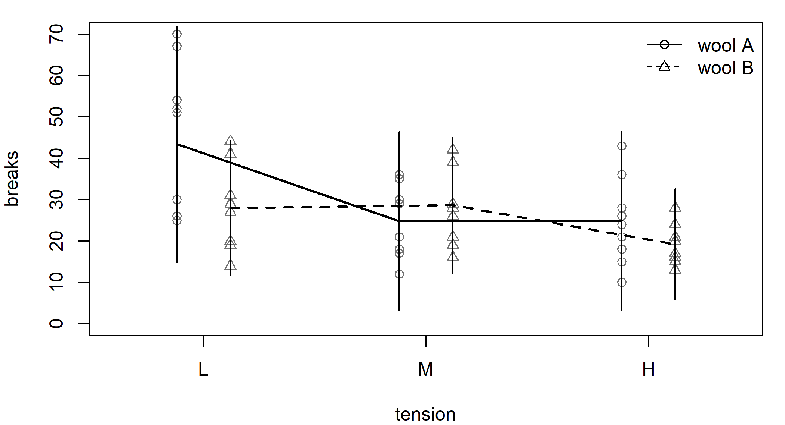
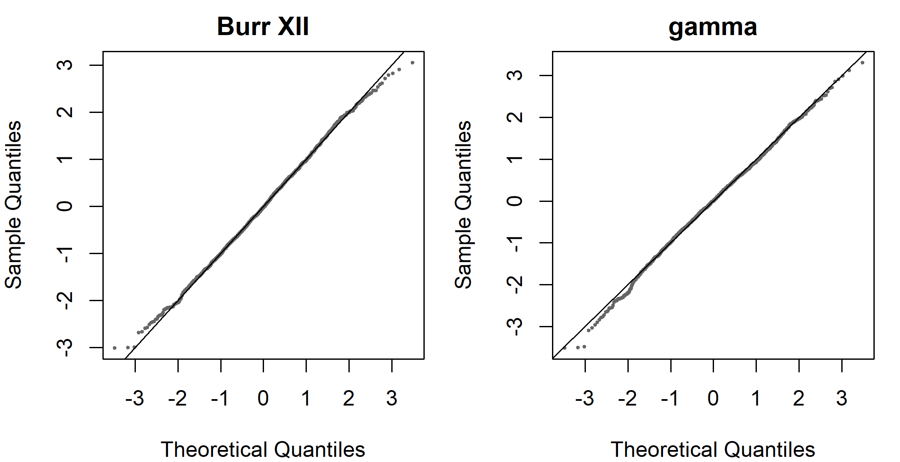
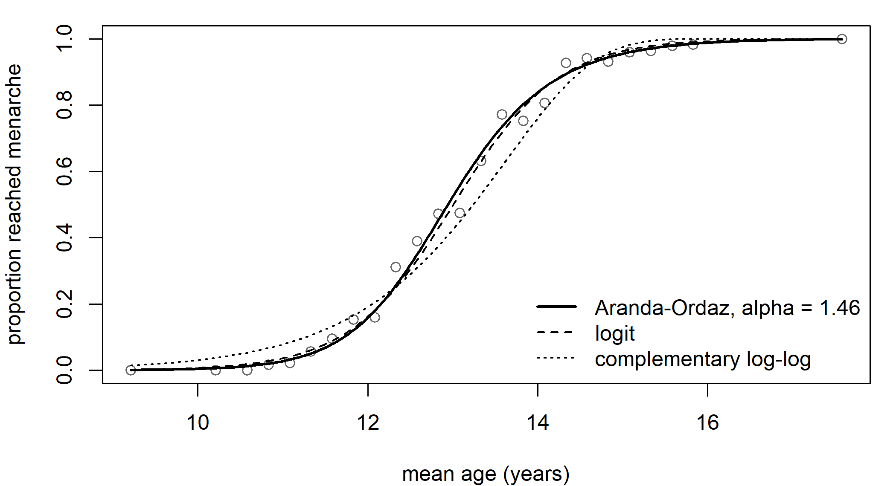

GenPois <- S7::new_class("GenPois", parent = discrete_distrib)
S7::method(distrib_pdf, GenPois) <- function(distrib, y, theta, log = FALSE,
...) {
mu <- theta[[1]]
phi <- theta[[2]]
s <- sqrt(phi)
th <- mu / s
la <- 1 - 1 / s
a <- th + la * y
ld <- ifelse(a > 0, log(th) + (y - 1) * log(a) - a - lgamma(y + 1), -Inf)
if (log) ld else exp(ld)
}
genpois_distrib <- function(link_mu = log_link(), link_phi = log_link()) {
GenPois(distrib_name = "generalized Poisson", dimension = "univariate",
bounds = c(0, Inf), params = c("mu", "phi"),
params_interpretation = c(mu = "mean", phi = "dispersion"),
n_params = 2,
params_bounds = list(mu = c(0, Inf), phi = c(0, Inf)),
link_params = list(mu = link_mu, phi = link_phi))
}
gp <- genpois_distrib()
c(mean = mean(gp, theta = list(mu = 4, phi = 2.5)),
variance = variance(gp, theta = list(mu = 4, phi = 2.5)))
#> mean variance
#> 4 1015 Writing a distribution and a link
The distributions and the links of the previous chapters are objects of distributions7 and linkfunctions7. A distribution or a link that these packages do not provide is written by the user as an object of the same kind, and statmod() then uses it as it uses the built-in ones: every parameter can have an equation with smooth terms, random effects and penalties. Section 5.7 and Section 4.6 showed the shortest case, a density and a pair of functions. This chapter shows the complete case. We write a discrete distribution and a continuous one, first with the density alone and then with the cdf, the quantile function and the score in closed form, and we write a link whose shape is set by a parameter.
15.1 The structure of a distribution
A distribution is an S7 class that inherits from continuous_distrib or from discrete_distrib, with a method for distrib_pdf(). The method receives the response y, a list theta with one element for each parameter, and the argument log; it returns the density or its logarithm at each observation. A constructor then creates the object with the names of the parameters, their bounds and their links.
Every other function of a distribution has a numerical fallback, which distributions7 uses when the class has no method of its own. The cdf of a continuous distribution is a quadrature of the density, and the cdf of a discrete one is a sum over the support. The quantile function inverts the cdf, by root finding for a continuous distribution and by a search in the table of cumulative probabilities for a discrete one. The random numbers of a discrete distribution are quantiles of uniform numbers, and those of a continuous distribution come from a ratio-of-uniforms generator. The mean and the variance are integrals or sums of the density. The score and the Hessian of the log-likelihood in the parameters are finite differences of the log-density, and the derivatives of order three and four are computed by one tensor stencil applied to the highest order that the class implements itself: the log-density if the class has only the density, the score if it has the score. A difference is never taken of another difference in the same parameter, because the error of a nested difference grows with each level.
A method written by the user replaces the fallback for that function and, through it, every quantity computed from it. A method must accept ..., because distributions7 passes arguments such as the number of threads through it. A method for a derivative in the parameters must also accept scale = c("parameter", "link"): it returns the derivative in the parameters, and the generic converts it to the scale of the link. The function statmod() checks these signatures before the fit and signals an error that names the method.
15.2 A discrete distribution: the generalized Poisson
The generalized Poisson distribution of Consul and Jain (1973) has the probability function \[ P(Y = y) = \frac{\theta\,(\theta + \lambda y)^{y - 1}\, e^{-\theta - \lambda y}}{y!}, \qquad y = 0, 1, 2, \ldots, \] with \(\theta > 0\) and \(0 \le \lambda < 1\). Its mean is \(\theta/(1 - \lambda)\) and its variance is \(\theta/(1 - \lambda)^3\). For regression we use the parametrization of Consul and Famoye (1992) in the mean \(\mu\) and a dispersion \(\phi\), with \[ \theta = \frac{\mu}{\sqrt{\phi}}, \qquad \lambda = 1 - \frac{1}{\sqrt{\phi}}, \] so that the mean is \(\mu\) and the variance is \(\phi\,\mu\). The variance is proportional to the mean, as in the quasi-Poisson model, and \(\phi = 1\) gives the Poisson distribution. The parametrization requires \(\phi \ge 1\), the overdispersed case; we write the density for every \(\phi > 0\) and set it to zero where \(\theta + \lambda y \le 0\). The class, its density and its constructor are:
The mean and the variance come from sums over the support, and they are \(\mu = 4\) and \(\phi\mu = 10\). The function check_distrib() tests the fallbacks against each other at one value of the parameters:
chk_gp <- check_distrib(gp, theta = list(mu = 4, phi = 2.5))
#> Distribution: generalized Poisson
#> Parameters: mu = 4, phi = 2.5
#> Observations: 100 Monte Carlo: 200000
#>
#> [OK ] density integrates to 1 2.22e-16
#> [OK ] density is non-negative 4.32e-03
#> [OK ] cdf in [0,1] and non-decreasing 0.00e+00
#> [OK ] cdf agrees with the density 5.55e-17
#> [OK ] quantile/cdf round-trip
#> [OK ] rng matches the cdf 1.28e+00
#> [OK ] expected information vs Monte Carlo 5.78e-01
#> [OK ] link-scale gradient vs finite differences 5.94e-09
#> [ -- ] gradient vs finite differences not run
#> no method of the family's own: the value is the numerical fallback, which this check would compare with itself
#> [ -- ] hessian vs finite differences not run
#> no method of the family's own: the value is the numerical fallback, which this check would compare with itself
#> [ -- ] deriv3 vs finite differences not run
#> no method of the family's own: the value is the numerical fallback, which this check would compare with itself
#> [ -- ] deriv4 vs finite differences not run
#> no method of the family's own: the value is the numerical fallback, which this check would compare with itself
#>
#> All 8 checks passed.
#> 4 checks not run, for the reasons given above.The 8 checks pass, and the checks of the derivatives in the parameters are not run, for the reason given in Section 5.7.
The model for the warp breaks
The data frame warpbreaks gives the number of breaks of the warp on a loom for 54 pieces of yarn, of two wools (A and B) and three tensions (L, M and H). We fit the generalized Poisson model with the interaction of the two factors for the mean and the wool for the dispersion, and we compare it with glmmTMB() (Brooks et al. 2017), whose family genpois() is the same distribution in the same parametrization. The criterion is ml(), which estimates the coefficients of \(\phi\) by maximum likelihood, as glmmTMB() does:
t_gp_density <- elapsed(
fit_gp <- statmod(breaks ~ wool * tension | phi ~ wool, distrib = gp,
data = warpbreaks, outer_criterion = ml()))
summary(fit_gp)
#> A statmod fit
#>
#> Call: statmod(formula = breaks ~ wool * tension | phi ~ wool, distrib = gp,
#> data = warpbreaks, outer_criterion = ml())
#>
#> Distribution: generalized Poisson Observations: 54
#>
#> === mu [log link]
#>
#> Parametric terms
#> estimate se z p lower upper
#> (Intercept) 3.771 0.1076 35.05 < 1e-16 3.56 3.982
#> woolB -0.4399 0.1443 -3.048 0.002304 -0.7228 -0.157
#> tensionM -0.5587 0.1744 -3.203 0.001361 -0.9006 -0.2168
#> tensionH -0.5571 0.1747 -3.189 0.001426 -0.8995 -0.2147
#> woolB:tensionM 0.5821 0.2206 2.639 0.008317 0.1498 1.014
#> woolB:tensionH 0.1809 0.2301 0.7862 0.431750 -0.27 0.6318
#>
#> === phi [log link]
#>
#> Parametric terms
#> estimate se z p lower upper
#> (Intercept) 1.542 0.2956 5.215 1.837e-07 0.9622 2.121
#> woolB -0.686 0.4084 -1.68 0.09305 -1.487 0.1145
#>
#> 95% intervals, bayesian variance
#> conditional log-likelihood -195.863173 effective df 8.00
#> cAIC 407.726 cBIC 423.638
#> fitted in 1.48 s
#> inner max |grad|/se 8.5e-10 min eigen 0.053
#> outer max |grad|/se 3.9e-09 min eigen 0.28
tmb_gp <- glmmTMB::glmmTMB(breaks ~ wool * tension, dispformula = ~ wool,
family = glmmTMB::genpois(), data = warpbreaks)
rbind(statmod = c(coef(fit_gp)$mu, coef(fit_gp)$phi),
glmmTMB = c(glmmTMB::fixef(tmb_gp)$cond, glmmTMB::fixef(tmb_gp)$disp))
#> (Intercept) woolB tensionM tensionH woolB:tensionM
#> statmod 3.770755 -0.4399182 -0.5587221 -0.5571424 0.5820770
#> glmmTMB 3.770755 -0.4399182 -0.5587227 -0.5571426 0.5820775
#> woolB:tensionH (Intercept) woolB
#> statmod 0.1808818 1.541564 -0.6859933
#> glmmTMB 0.1808817 1.541565 -0.6859940
c(statmod = as.numeric(logLik(fit_gp)), glmmTMB = as.numeric(logLik(tmb_gp)))
#> statmod glmmTMB
#> -195.8632 -195.8632The two fits give the same coefficients and the same log-likelihood. The dispersion of wool A is \(\exp(1.542) =
4.67\), so its variance is about 4.7 times its mean, and the dispersion of wool B is smaller. Figure 15.1 shows the fitted means with an interval of two standard deviations, \(\mu \pm 2\sqrt{\phi\mu}\).

The negative binomial distribution of Section 4.4 has a variance that grows with the square of the mean. The AIC compares the two assumptions on these data:
fit_gp_nb <- statmod(breaks ~ wool * tension | theta ~ wool,
distrib = negbin2_distrib(), data = warpbreaks,
outer_criterion = ml())
c(generalized_poisson = AIC(fit_gp), negative_binomial = AIC(fit_gp_nb))
#> generalized_poisson negative_binomial
#> 407.7263 405.4274The difference is 2.3, too small to prefer one variance function to the other with 54 observations.
The score in closed form
The fit above computes the score by finite differences of the log-density. The score in closed form is short. With \(a = \theta + \lambda y\), the log-probability is \(\log\theta + (y - 1)\log a - a - \log y!\), and its derivatives in \(\theta\) and \(\lambda\) are \[
\frac{\partial \ell}{\partial \theta} = \frac{1}{\theta} + \frac{y - 1}{a} - 1,
\qquad
\frac{\partial \ell}{\partial \lambda} = \frac{y\,(y - 1)}{a} - y .
\] The chain rule through \(\theta = \mu/\sqrt\phi\) and \(\lambda = 1 - 1/\sqrt\phi\) gives the score in \((\mu, \phi)\): \[
\frac{\partial \ell}{\partial \mu} = \frac{1}{\sqrt\phi}\,\frac{\partial \ell}{\partial \theta},
\qquad
\frac{\partial \ell}{\partial \phi} = \frac{1}{2\phi\sqrt\phi}
\left(\frac{\partial \ell}{\partial \lambda} - \mu\,\frac{\partial \ell}{\partial \theta}\right).
\] We register it as the method of distrib_gradient(). The method returns a list with one vector for each parameter, on the scale of the parameters:
S7::method(distrib_gradient, GenPois) <- function(distrib, y, theta,
scale = c("parameter", "link"),
...) {
mu <- theta[[1]]
phi <- theta[[2]]
s <- sqrt(phi)
th <- mu / s
la <- 1 - 1 / s
a <- th + la * y
d_th <- 1 / th + (y - 1) / a - 1
d_la <- y * (y - 1) / a - y
list(mu = d_th / s, phi = (d_la - mu * d_th) / (2 * phi * s))
}
score_gap <- max(abs(
unlist(distrib_gradient(gp, y = 0:12, theta = list(mu = 4, phi = 2.5))) -
unlist(numerical_gradient(gp, y = 0:12, theta = list(mu = 4, phi = 2.5)))))
score_gap
#> [1] 5.916095e-11The closed form and the finite differences agree to \(6 \times 10^{-11}\). With the score registered, the Hessian is one difference of the score, and the derivatives of order three and four are one stencil on the score, which is more accurate than a stencil on the log-density. The same model, fitted again, reaches the same point in less time:
t_gp_score <- elapsed(
fit_gp_s <- statmod(breaks ~ wool * tension | phi ~ wool, distrib = gp,
data = warpbreaks, outer_criterion = ml()))
c(logLik_density = as.numeric(logLik(fit_gp)),
logLik_score = as.numeric(logLik(fit_gp_s)),
seconds_density = t_gp_density, seconds_score = t_gp_score)
#> logLik_density logLik_score seconds_density seconds_score
#> -195.8632 -195.8632 1.4800 0.1900A random effect
A distribution written by the user takes random effects as a built-in one does. We treat the three tensions as a sample of groups, with a random intercept in the equation of \(\mu\), and compare the fit with glmmTMB():
fit_gp_r <- statmod(breaks ~ wool + random(~ 1 | tension) | phi ~ wool,
distrib = gp, data = warpbreaks, outer_criterion = ml())
summary(fit_gp_r)
#> A statmod fit
#>
#> Call: statmod(formula = breaks ~ wool + random(~1 | tension) | phi ~
#> wool, distrib = gp, data = warpbreaks, outer_criterion = ml())
#>
#> Distribution: generalized Poisson Observations: 54
#>
#> === mu [log link]
#>
#> Parametric terms
#> estimate se z p lower upper
#> (Intercept) 3.429 0.1233 27.8 < 1e-16 3.187 3.67
#> woolB -0.2066 0.1061 -1.947 0.05153 -0.4146 0.001375
#>
#> random(~1 | tension) [3 coefficients, edf 1.48]
#> estimate se lower upper
#> sigma [ml] 0.1543 0.08367 0.05329 0.4466
#> predicted effects (3 levels of tension)
#> Min. 1st Qu. Median Mean 3rd Qu. Max.
#> (Intercept) -0.1698 -0.08013 0.00953 0 0.08489 0.1603
#>
#> === phi [log link]
#>
#> Parametric terms
#> estimate se z p lower upper
#> (Intercept) 1.804 0.3157 5.713 1.108e-08 1.185 2.422
#> woolB -0.7913 0.4426 -1.788 0.07381 -1.659 0.07621
#>
#> 95% intervals, bayesian variance
#> conditional log-likelihood -199.646790 effective df 5.48
#> cAIC 410.256 cBIC 421.158
#> fitted in 420 ms
#> inner max |grad|/se 7.3e-15 min eigen 0.11
#> outer max |grad|/se 7.7e-08 min eigen 0.25
#> 1 note: print(summary(fit), notes = TRUE)
fit_gp_ra <- statmod(breaks ~ wool + random(~ 1 | tension) | phi ~ wool,
distrib = gp, data = warpbreaks,
outer_criterion = ml(marginal = "all"))
tmb_gp_r <- glmmTMB::glmmTMB(breaks ~ wool + (1 | tension),
dispformula = ~ wool,
family = glmmTMB::genpois(), data = warpbreaks)
data.frame(
fit = c("ml()", "ml(marginal = \"all\")", "glmmTMB"),
intercept = c(coef(fit_gp_r)$mu[[1]], coef(fit_gp_ra)$mu[[1]],
glmmTMB::fixef(tmb_gp_r)$cond[[1]]),
sd = c(hyper(fit_gp_r)$estimate, hyper(fit_gp_ra)$estimate,
attr(glmmTMB::VarCorr(tmb_gp_r)$cond$tension, "stddev")),
logLik = c(logLik(fit_gp_r, type = "marginal"),
logLik(fit_gp_ra, type = "marginal"), logLik(tmb_gp_r)))
#> fit intercept sd logLik
#> 1 ml() 3.428744 0.1542810 -202.9709
#> 2 ml(marginal = "all") 3.423364 0.1542476 -202.9697
#> 3 glmmTMB 3.423363 0.1542464 -202.9697The criterion ml() holds the fixed effects of \(\mu\) at the joint mode of the fixed and the random effects, and glmmTMB() chooses them to maximize the Laplace approximation of the likelihood. For a count response the two differ slightly, as Section 8.1 explains, and ml(marginal = "all") reproduces glmmTMB().
15.3 A continuous distribution: the Burr XII
The Burr XII distribution (Burr 1942) with scale \(\mu\) and shapes \(c\) and \(k\) has the density \[
f(y) = \frac{c\,k}{\mu}\left(\frac{y}{\mu}\right)^{c - 1}
\left\{1 + \left(\frac{y}{\mu}\right)^{c}\right\}^{-k - 1}, \qquad y > 0 .
\] The shape \(c\) governs the lower tail and the product \(ck\) the upper tail, which decays as \(y^{-ck - 1}\); the log-logistic distribution of Section 5.7 is the case \(k = 1\). It is also the generalized beta distribution of the second kind of McDonald (1984) with its third parameter equal to one, which is how gamlss provides it (the family GB2() with \(\nu = 1\)). We write the class with the density alone:
Burr <- S7::new_class("Burr", parent = continuous_distrib)
S7::method(distrib_pdf, Burr) <- function(distrib, y, theta, log = FALSE, ...) {
mu <- theta[[1]]
cc <- theta[[2]]
k <- theta[[3]]
z <- y / mu
ld <- log(cc) + log(k) - log(mu) + (cc - 1) * log(z) - (k + 1) * log1p(z^cc)
if (log) ld else exp(ld)
}
burr_distrib <- function(link_mu = log_link(), link_c = log_link(),
link_k = log_link()) {
Burr(distrib_name = "Burr XII", dimension = "univariate",
bounds = c(0, Inf), params = c("mu", "c", "k"),
params_interpretation = c(mu = "scale", c = "shape", k = "shape"),
n_params = 3,
params_bounds = list(mu = c(0, Inf), c = c(0, Inf), k = c(0, Inf)),
link_params = list(mu = link_mu, c = link_c, k = link_k))
}
bd <- burr_distrib()
chk_burr <- check_distrib(bd, theta = list(mu = 800, c = 3, k = 1.5))
#> Distribution: Burr XII
#> Parameters: mu = 800, c = 3, k = 1.5
#> Observations: 100 Monte Carlo: 200000
#>
#> [OK ] density integrates to 1 2.74e-10
#> [OK ] density is non-negative 1.96e-05
#> [OK ] cdf in [0,1] and non-decreasing 2.46e-02
#> [OK ] cdf agrees with the density 5.03e-14
#> [OK ] quantile/cdf round-trip 1.11e-16
#> [OK ] rng matches the cdf 1.73e+00
#> [OK ] expected information vs Monte Carlo 1.55e+00
#> [OK ] response derivatives vs finite differences 6.72e-12
#> [OK ] link-scale gradient vs finite differences 1.01e-08
#> [ -- ] gradient vs finite differences not run
#> no method of the family's own: the value is the numerical fallback, which this check would compare with itself
#> [ -- ] hessian vs finite differences not run
#> no method of the family's own: the value is the numerical fallback, which this check would compare with itself
#> [ -- ] deriv3 vs finite differences not run
#> no method of the family's own: the value is the numerical fallback, which this check would compare with itself
#> [ -- ] deriv4 vs finite differences not run
#> no method of the family's own: the value is the numerical fallback, which this check would compare with itself
#>
#> All 9 checks passed.
#> 4 checks not run, for the reasons given above.The data frame rent of the gamlss.data package gives the monthly rent R of 1969 flats in Munich, with the floor space Fl in square meters, the year of construction A and the location loc in three classes (Stasinopoulos et al. 2017). A first model has a linear effect of the floor space and of the location on the scale, the location on \(c\), and \(k\) constant. We fit it with ml() and compare it with gamlss():
fit_burr_lin <- statmod(R ~ Fl + loc | c ~ loc, distrib = bd, data = rent,
outer_criterion = ml())
summary(fit_burr_lin)
#> A statmod fit
#>
#> Call: statmod(formula = R ~ Fl + loc | c ~ loc, distrib = bd, data = rent,
#> outer_criterion = ml())
#>
#> Distribution: Burr XII Observations: 1969
#>
#> === mu [log link]
#>
#> Parametric terms
#> estimate se z p lower upper
#> (Intercept) 6.273 0.1074 58.43 < 1e-16 6.062 6.483
#> Fl 0.01075 0.0004179 25.72 < 1e-16 0.009926 0.01156
#> loc2 0.1712 0.0421 4.067 4.766e-05 0.0887 0.2537
#> loc3 0.2322 0.04595 5.053 4.359e-07 0.1421 0.3222
#>
#> === c [log link]
#>
#> Parametric terms
#> estimate se z p lower upper
#> (Intercept) 1.057 0.06485 16.3 <1e-16 0.9298 1.184
#> loc2 0.08828 0.06518 1.354 0.1756 -0.03947 0.216
#> loc3 0.1874 0.06998 2.678 0.0074 0.05027 0.3246
#>
#> === k [log link]
#>
#> Parametric terms
#> estimate se z p lower upper
#> (Intercept) 1.424 0.2197 6.48 9.159e-11 0.9931 1.854
#>
#> 95% intervals, bayesian variance
#> conditional log-likelihood -14000.747621 effective df 8.00
#> cAIC 28017.495 cBIC 28062.177
#> fitted in 2.8 s
#> inner max |grad|/se 2.5e-10 min eigen 0.026
#> outer max |grad|/se 1.6e-09 min eigen 0.042
gl_burr <- gamlss::gamlss(R ~ Fl + loc, sigma.formula = ~ loc,
nu.formula = ~ 1, tau.formula = ~ 1,
family = gamlss.dist::GB2(), data = rent,
nu.start = 1, nu.fix = TRUE, n.cyc = 200,
trace = FALSE)
c(statmod = as.numeric(logLik(fit_burr_lin)),
gamlss = as.numeric(logLik(gl_burr)))
#> statmod gamlss
#> -14000.75 -14000.82The log-likelihood of statmod() is 0.08 higher. The algorithm of gamlss() updates one parameter at a time and stops when the global deviance changes by less than its tolerance, here before the maximum; its estimate of \(\log k\) is 1.34 against 1.42.
Smooth effects
The rent grows with the floor space and with the year of construction, and neither effect is linear. We give both a smooth term in the equation of the scale, and we compare the Burr XII model with a gamma model that has the same equation for the mean and the location for the dispersion:
t_burr_density <- elapsed(
fit_burr <- statmod(R ~ s(Fl) + s(A) + loc | c ~ loc, distrib = bd,
data = rent))
summary(fit_burr)
#> A statmod fit
#>
#> Call: statmod(formula = R ~ s(Fl) + s(A) + loc | c ~ loc, distrib = bd,
#> data = rent)
#>
#> Distribution: Burr XII Observations: 1969
#>
#> === mu [log link]
#>
#> Parametric terms
#> estimate se z p lower upper
#> (Intercept) 6.767 0.07735 87.48 < 1e-16 6.615 6.919
#> loc2 0.156 0.03839 4.063 4.835e-05 0.08074 0.2312
#> loc3 0.2459 0.04135 5.945 2.757e-09 0.1648 0.3269
#>
#> s(Fl) [9 coefficients, edf 1.64]
#> estimate se z p lower upper
#> lambda [reml] 13220 33770 88.44 1976000
#> lin 0.2253 0.008549 26.36 < 1e-16 0.2086 0.2421
#>
#> s(A) [9 coefficients, edf 4.05]
#> estimate se z p lower upper
#> lambda [reml] 133.3 118 23.5 755.9
#> lin 0.08477 0.009498 8.925 < 1e-16 0.06616 0.1034
#>
#> === c [log link]
#>
#> Parametric terms
#> estimate se z p lower upper
#> (Intercept) 1.121 0.06621 16.93 < 1e-16 0.991 1.25
#> loc2 0.1544 0.066 2.339 0.0193490 0.025 0.2837
#> loc3 0.2463 0.07074 3.482 0.0004974 0.1077 0.385
#>
#> === k [log link]
#>
#> Parametric terms
#> estimate se z p lower upper
#> (Intercept) 0.8907 0.153 5.821 5.858e-09 0.5908 1.191
#>
#> 95% intervals, bayesian variance
#> conditional log-likelihood -13911.864213 effective df 12.68
#> cAIC 27849.095 cBIC 27919.936
#> fitted in 3.89 s
#> inner max |grad|/se 1.4e-10 min eigen 0.032
#> outer max |grad|/se 1.9e-08 min eigen 0.043
#> 1 note: print(summary(fit), notes = TRUE)
fit_rent_gamma <- statmod(R ~ s(Fl) + s(A) + loc | phi ~ loc,
distrib = gamma1_distrib(), data = rent)
c(burr = summary(fit_burr)@aic, gamma = summary(fit_rent_gamma)@aic)
#> burr gamma
#> 27849.10 27851.29The two cAIC are close, and the Burr XII model is slightly better. The quantile residuals of Section 1.6 need the cdf, which for this class is a quadrature of the density at each observation:
t_resid_density <- elapsed(r_burr <- residuals(fit_burr))
c(sd = sd(r_burr), seconds = t_resid_density)
#> sd seconds
#> 0.9944148 1.4900000The cdf, the quantile function and the score
The Burr XII distribution has a cdf and a quantile function in closed form, \[
F(y) = 1 - \left\{1 + \left(\frac{y}{\mu}\right)^{c}\right\}^{-k},
\qquad
F^{-1}(p) = \mu\left\{(1 - p)^{-1/k} - 1\right\}^{1/c},
\] and with \(z = y/\mu\) and \(r = z^c/(1 + z^c)\) the score is \[
\frac{\partial \ell}{\partial \mu} = \frac{c\,\{(k + 1)\,r - 1\}}{\mu},
\qquad
\frac{\partial \ell}{\partial c} = \frac{1}{c} + \log z\,\{1 - (k + 1)\,r\},
\qquad
\frac{\partial \ell}{\partial k} = \frac{1}{k} - \log(1 + z^c).
\] We register the three methods. The cdf is computed from the logarithm of the survival function, \(-k\log(1 + z^c)\), with expm1(), so that it keeps its precision where \(F\) is small:
S7::method(distrib_cdf, Burr) <- function(distrib, q, theta, lower.tail = TRUE,
log.p = FALSE, ...) {
mu <- theta[[1]]
cc <- theta[[2]]
k <- theta[[3]]
log_s <- -k * log1p((pmax(q, 0) / mu)^cc)
p <- if (lower.tail) -expm1(log_s) else exp(log_s)
if (log.p) log(p) else p
}
S7::method(distrib_quantile, Burr) <- function(distrib, p, theta,
lower.tail = TRUE,
log.p = FALSE, ...) {
mu <- theta[[1]]
cc <- theta[[2]]
k <- theta[[3]]
if (log.p) p <- exp(p)
if (!lower.tail) p <- 1 - p
mu * ((1 - p)^(-1 / k) - 1)^(1 / cc)
}
S7::method(distrib_gradient, Burr) <- function(distrib, y, theta,
scale = c("parameter", "link"),
...) {
mu <- theta[[1]]
cc <- theta[[2]]
k <- theta[[3]]
z <- y / mu
lz <- log(z)
r <- z^cc / (1 + z^cc)
list(mu = cc * ((k + 1) * r - 1) / mu,
c = 1 / cc + lz * (1 - (k + 1) * r),
k = 1 / k - log1p(z^cc))
}
chk_burr_closed <- check_distrib(bd, theta = list(mu = 800, c = 3, k = 1.5))
#> Distribution: Burr XII
#> Parameters: mu = 800, c = 3, k = 1.5
#> Observations: 100 Monte Carlo: 200000
#>
#> [OK ] density integrates to 1 2.74e-10
#> [OK ] density is non-negative 1.96e-05
#> [OK ] cdf in [0,1] and non-decreasing 2.46e-02
#> [OK ] cdf agrees with the density 3.45e-14
#> [OK ] quantile/cdf round-trip 1.80e-16
#> [OK ] rng matches the cdf 1.83e+00
#> [OK ] gradient vs finite differences 1.02e-10
#> [OK ] expected information vs Monte Carlo 1.27e+00
#> [OK ] response derivatives vs finite differences 4.38e-12
#> [OK ] link-scale gradient vs finite differences 1.02e-08
#> [ -- ] hessian vs finite differences not run
#> no method of the family's own: the value is the numerical fallback, which this check would compare with itself
#> [ -- ] deriv3 vs finite differences not run
#> no method of the family's own: the value is the numerical fallback, which this check would compare with itself
#> [ -- ] deriv4 vs finite differences not run
#> no method of the family's own: the value is the numerical fallback, which this check would compare with itself
#>
#> All 10 checks passed.
#> 3 checks not run, for the reasons given above.The table now has a row for the score, because the score is the class’s own method and finite differences of the log-density are an independent check of it. We fit the same model again and compute the residuals with the closed cdf:
t_burr_closed <- elapsed(
fit_burr_c <- statmod(R ~ s(Fl) + s(A) + loc | c ~ loc, distrib = bd,
data = rent))
t_resid_closed <- elapsed(r_burr_c <- residuals(fit_burr_c))
data.frame(
methods = c("density", "density, cdf, quantile, score"),
logLik = c(logLik(fit_burr), logLik(fit_burr_c)),
fit_seconds = c(t_burr_density, t_burr_closed),
residual_seconds = c(t_resid_density, t_resid_closed))
#> methods logLik fit_seconds residual_seconds
#> 1 density -13911.86 3.89 1.49
#> 2 density, cdf, quantile, score -13911.86 2.58 0.02The fit reaches the same point, and the residuals, which needed one quadrature for each of the 1969 observations, now cost one evaluation of a formula. Figure 15.2 compares the quantile residuals of the Burr XII model and of the gamma model.

15.4 A link with a parameter: Aranda-Ordaz
A link is an S7 class that inherits from link, with the two methods linkfun() and linkinv() (Section 4.6). The property link_params holds the parameters of the link, so one class describes a whole family of links. The asymmetric family of Aranda-Ordaz (1981) for a probability \(\mu\) is \[
\eta = \log\frac{(1 - \mu)^{-\alpha} - 1}{\alpha},
\qquad
\mu = 1 - (1 + \alpha e^{\eta})^{-1/\alpha},
\qquad \alpha > 0 .
\] With \(\alpha = 1\) it is the logit link, and as \(\alpha\) tends to zero it tends to the complementary log-log link. The class reads \(\alpha\) from link_params, and a constructor sets it:
ArandaOrdaz <- S7::new_class("ArandaOrdaz", parent = link)
S7::method(linkfun, ArandaOrdaz) <- function(x, theta) {
a <- x@link_params$alpha
log(((1 - theta)^(-a) - 1) / a)
}
S7::method(linkinv, ArandaOrdaz) <- function(x, eta) {
a <- x@link_params$alpha
1 - (1 + a * exp(eta))^(-1 / a)
}
ao_link <- function(alpha) {
ArandaOrdaz(link_name = sprintf("aranda-ordaz(%g)", alpha),
link_bounds = c(0, 1), link_params = list(alpha = alpha))
}
link_fallback_orders(ao_link(0.5))
#> $forward
#> [1] 0
#>
#> $inverse
#> [1] 0
chk_ao <- check_link(ao_link(0.5))
#> Checking S7 Link Object: aranda-ordaz(0.5)
#> [1] Invertibility (Theta space): [PASSED]
#> [2] Invertibility (Eta space): [PASSED]
#> [3] Strict Monotonicity: [PASSED]
#> [4] Inverse Function Theorem: [PASSED]
#> [5] Link Derivatives: [numerical]
#> [6] Inverse Link Derivatives: [numerical]The derivatives of both directions are numerical, and check_link() marks them so. The data frame menarche of the MASS package gives, for 25 groups of girls of increasing mean age, the number of girls who had reached menarche. The parameter \(\alpha\) is not estimated by statmod(), because a link is fixed during a fit. We profile the log-likelihood over \(\alpha\) and maximize it with optimize():
ao_loglik <- function(alpha) {
f <- statmod(cbind(Menarche, Total - Menarche) ~ Age,
distrib = binomial_distrib(link_mu = ao_link(alpha)),
data = menarche)
as.numeric(logLik(f))
}
ao_opt <- optimize(ao_loglik, interval = c(0.05, 5), maximum = TRUE)
alpha_hat <- ao_opt$maximum
fit_ao <- statmod(cbind(Menarche, Total - Menarche) ~ Age,
distrib = binomial_distrib(link_mu = ao_link(alpha_hat)),
data = menarche)
summary(fit_ao)
#> A statmod fit
#>
#> Call: statmod(formula = cbind(Menarche, Total - Menarche) ~ Age, distrib = binomial_distrib(link_mu = ao_link(alpha_hat)),
#> data = menarche)
#>
#> Distribution: binomial Observations: 25
#>
#> === mu [aranda-ordaz(1.4579) link]
#>
#> Parametric terms
#> estimate se z p lower upper
#> (Intercept) -24.67 0.9063 -27.22 < 1e-16 -26.44 -22.89
#> Age 1.92 0.06995 27.45 < 1e-16 1.783 2.057
#>
#> 95% intervals, bayesian variance
#> conditional log-likelihood -53.385061 effective df 2.00
#> cAIC 110.770 cBIC 113.208
#> fitted in 30 ms
#> inner max |grad|/se 4.5e-09 min eigen 0.0033The estimate is \(\hat\alpha = 1.458\). The function glm() accepts a link written by the user as an object of class link-glm, with the link, its inverse and the derivative of the inverse. We write it for the same \(\alpha\), and we fit the logit and the complementary log-log links for comparison:
ao_glm <- function(a) {
structure(list(
linkfun = function(mu) log(((1 - mu)^(-a) - 1) / a),
linkinv = function(eta) 1 - (1 + a * exp(eta))^(-1 / a),
mu.eta = function(eta) exp(eta) * (1 + a * exp(eta))^(-1 / a - 1),
valideta = function(eta) TRUE, name = "aranda-ordaz"), class = "link-glm")
}
glm_ao <- glm(cbind(Menarche, Total - Menarche) ~ Age,
family = binomial(link = ao_glm(alpha_hat)), data = menarche)
rbind(statmod = coef(fit_ao)$mu, glm = coef(glm_ao))
#> (Intercept) Age
#> statmod -24.66814 1.919966
#> glm -24.66814 1.919966
fit_logit <- statmod(cbind(Menarche, Total - Menarche) ~ Age,
distrib = binomial_distrib(link_mu = logit_link()),
data = menarche)
fit_cloglog <- statmod(cbind(Menarche, Total - Menarche) ~ Age,
distrib = binomial_distrib(link_mu = cloglog_link()),
data = menarche)
c(aranda_ordaz = as.numeric(logLik(fit_ao)), glm = as.numeric(logLik(glm_ao)),
logit = as.numeric(logLik(fit_logit)),
cloglog = as.numeric(logLik(fit_cloglog)))
#> aranda_ordaz glm logit cloglog
#> -53.38506 -53.38506 -55.37763 -101.43629The two fits with the Aranda-Ordaz link agree. The estimate of \(\alpha\) lies above one, on the other side of the logit link from the complementary log-log link, and the log-likelihood rises by 1.99 over the logit link, which is the special case \(\alpha = 1\). The likelihood ratio statistic for \(\alpha = 1\) is therefore 3.99 on one degree of freedom. Figure 15.3 shows the three fitted curves.

Analytic derivatives of a link
A method for one of the eight derivative generics replaces its fallback, as a method of a distribution does. The derivative of the inverse link is \[
\frac{d\mu}{d\eta} = e^{\eta}\,(1 + \alpha e^{\eta})^{-1/\alpha - 1}.
\] We register it as the method of dlinkinv(). The fallbacks of the higher orders of the inverse link then take one central difference of this analytic first derivative, and check_link() compares it with a finite difference of linkinv():
S7::method(dlinkinv, ArandaOrdaz) <- function(x, eta) {
a <- x@link_params$alpha
exp(eta) * (1 + a * exp(eta))^(-1 / a - 1)
}
link_fallback_orders(ao_link(0.5))
#> $forward
#> [1] 0
#>
#> $inverse
#> [1] 1
chk_ao_d <- check_link(ao_link(0.5))
#> Checking S7 Link Object: aranda-ordaz(0.5)
#> [1] Invertibility (Theta space): [PASSED]
#> [2] Invertibility (Eta space): [PASSED]
#> [3] Strict Monotonicity: [PASSED]
#> [4] Inverse Function Theorem: [PASSED]
#> [5] Link Derivatives: [numerical]
#> [6] Inverse Link Derivatives: [PASSED to order 1, 4 numerical]The first order of the inverse link is now analytic and passes the check, and the four orders above it are reported as numerical.